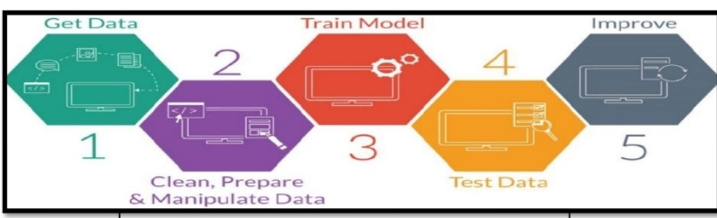

AI Design Model Page
Links
- AI application are a lot around us and in this paper, I will discuss some
of the most common application of AI that we always use nowadays which
is Virtual Assistants such as Siri, Cortana...etc. Over the past few years
smart assistants are becoming a very common technology in most of the smart
devices and most importantly, that these assistants are getting smarter
than ever. In addition to the awesome help they provide us with, is that
every one of these apps has unique features. Artificial Intelligence works
according to the following phases: getting the data, clean/manipulate/
prepare the data, train model, test data, and improve the data as mentioned
in (figure). Before accessing the data, a business must verify the quality
of the data to ensure that it meets the requirement

- Siri Virtual Assistant: Siri is the well-known virtual assistant which uses
voice recognitions and typed command in order to perform a certain task
within a device. Siri is considered one of AI most used applications. The
application simply takes the input from the user such as (e.g. Call dad)
and try to find the most related keywords used in this command. Siri tries
to eliminate inconsistent result through using the language pattern recognizer
and from there to active ontology by searching through the contacts, then
it tries to relate the contact named “Dad” and perform the task which is
in this case is “Calling” and finally the output of this action will be
“calling dad” and to consider all the possible situations refer to(figure)